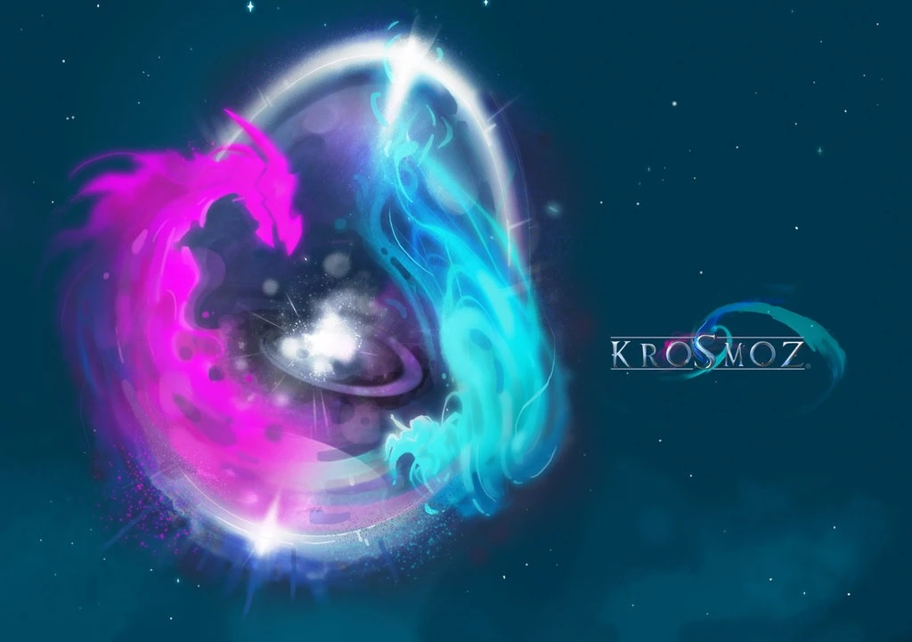
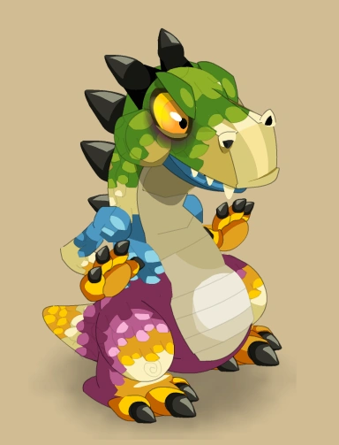
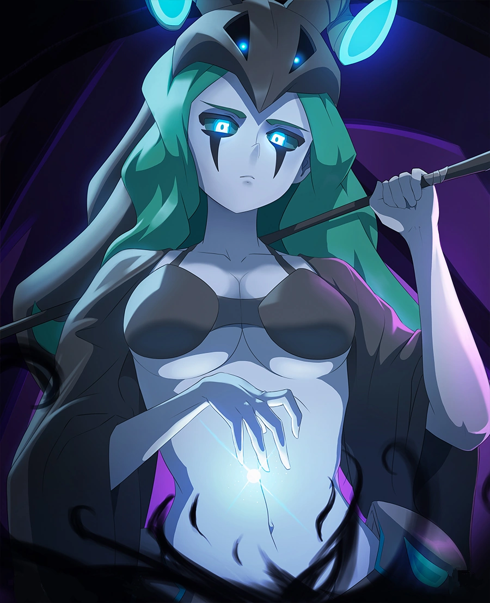
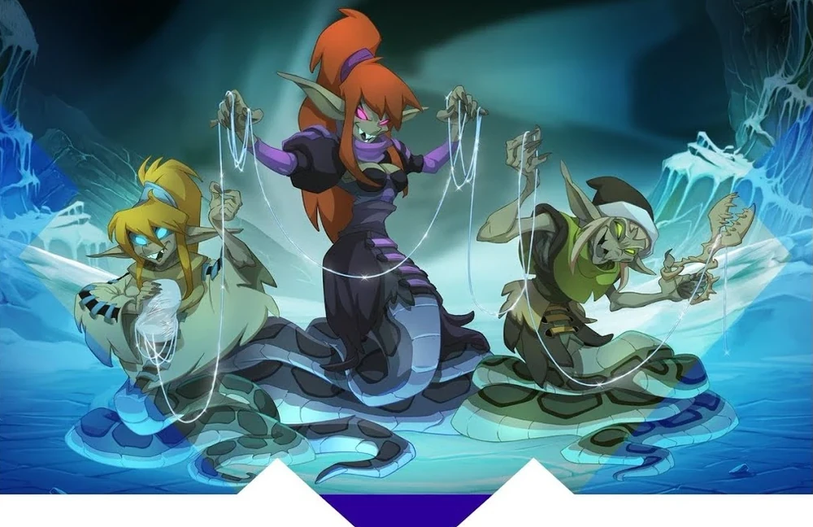
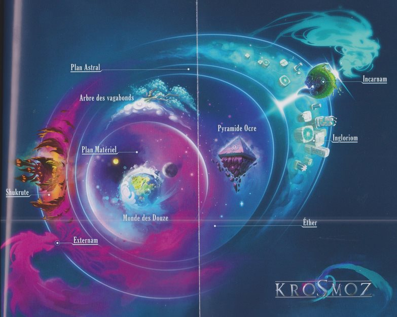
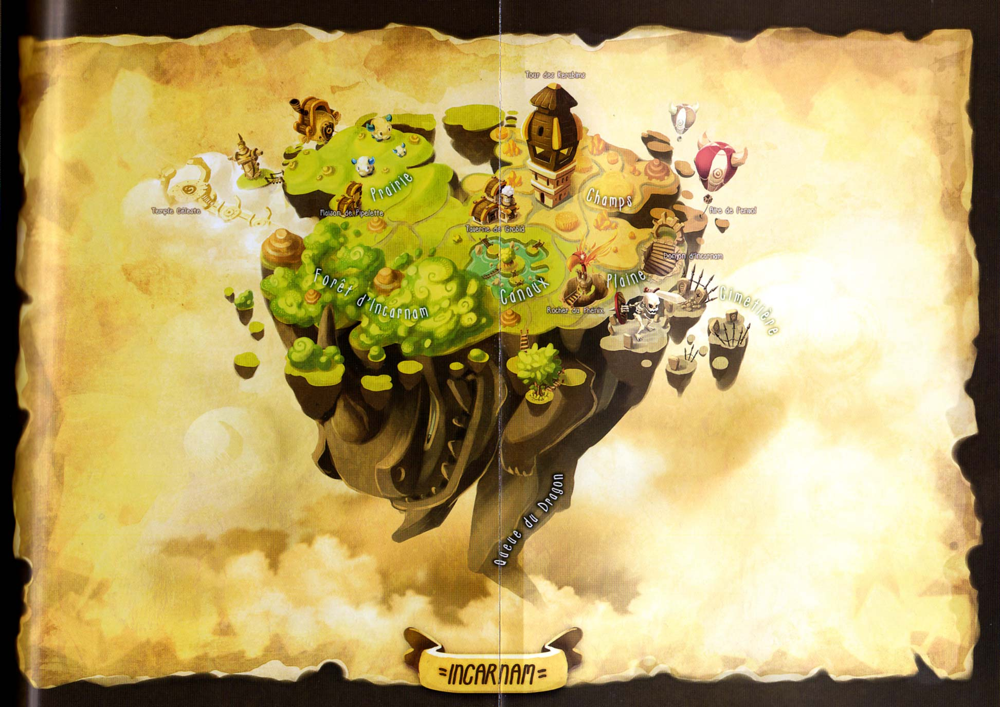
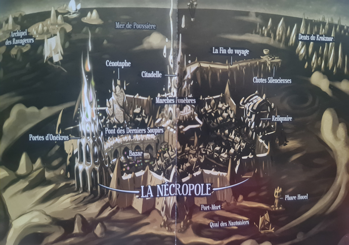
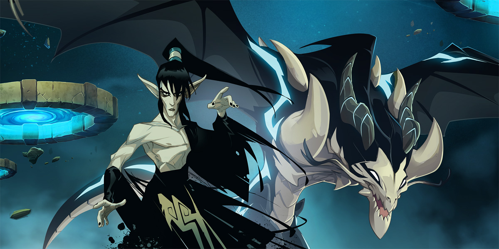

Cronología hecha por Uelman traducción y correcciones por Drarios y Nelson Magno
LA ÉPOCA PRIMITIVA
Al principio, solo existía la nada, hasta que un día dos seres se cruzaron: La Gran Diosa de Wakfu, también conocida como la diosa Selatrop, y el Gran Dragón de la Estasis. Los dos seres bailaron y del encuentro nació el Krosmoz, un lado lleno de Wakfu, el fuego de la creación, y el otro de Stasis, el fuego de la destrucción.
De estas dos energías, nacieron dos dragones: Prismaradona al lado del Wakfu y Thanatena del lado de la Estasis.
 Entonces, las Nordes, tres hermanas que tejen el destino de los mortales, se acercaron a Thanatena con un trato.
Le pidieron que creara el Externam, a cambio nunca se separaría del lado de su hermano Prismaradona. Thanatena estuvo de acuerdo, por lo que ella y su hermano organizaron el universo.
El lado cubierto por el wakfu de la Gran Diosa se convirtió en Incarnam, y las almas encarnarían en la espalda de Prismaradona. Según algunas leyendas, Prismaradona usó su aliento para llenar el Krosmoz con la Brisa Cuadramental, también conocida como la magia elemental fuego, agua, tierra y aire (algunas investigaciones y teorías de los hipermagos o el Mago de Zo dicen que el origen de la Brisa Cuadramental nació miles de años después, con la armonía del Dofus Primordial).
El lado cubierto por la estasis del Gran Dragón se convirtió en Externam, y las almas serían conducidas allí a través del río Akeranzu, a una necrópolis llamada el Reino Gris donde gobierna Thanatena, y donde las almas recibirán juicio, ya sea para ser enviadas de regreso a Incarnam en globos aerostáticos y reencarnar, o ser catapultadas fuera del Krosmoz en el Olvido.
La necrópolis está rodeada por el destructivo fuego negro del Gran Dragón, pero se mantiene a salvo gracias a las llamas blancas de la creación.
Por debajo de los planos de Incarnam y de Externam, de los sueños de Prismaradona, nació el Plano astral, donde existirán los sueños de todas las criaturas. El hijo de Prismaradona, Draconiros, se convertirá en el gobernante de este plano.
Debajo de él, el Plano etéreo, o simplemente el Éter, un plano interseccional donde Wakfu y Stasis se equilibran.
Y finalmente, el Plano material, donde nacerán y morirán las almas mortales.